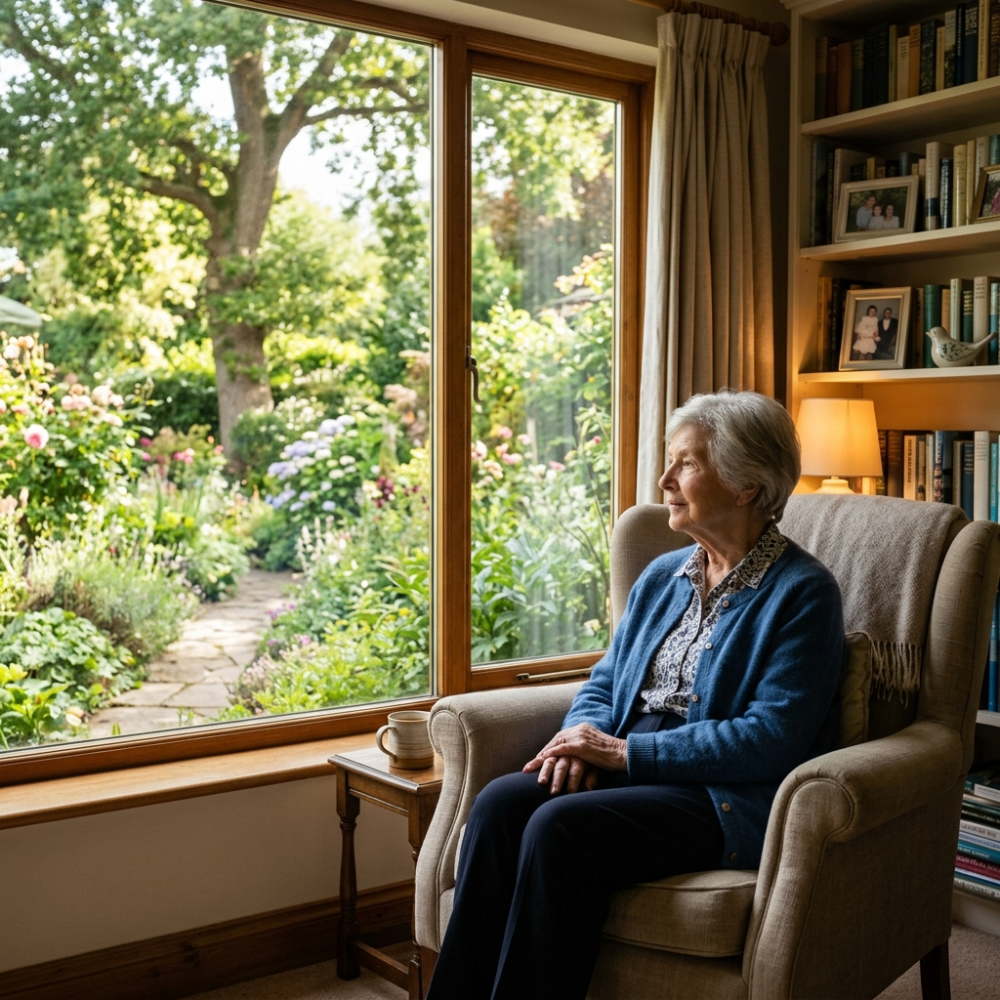

Intelligent Elder-Care Monitoring & Real-Time Safety Guardian
An AI guardian that continuously watches camera feeds, spots unassisted bed-exits and sudden falls, and dispatches instant visual Telegram alerts so family never worries in silence.
Zero wearables required. 100% on-device CPU inference preserves dignity and privacy.
Caregivers Cannot Watch Every Moment

Unmonitored hours create silent risks for seniors living at home.
Continuous Monitoring
Impossible to watch camera feeds all day during remote work or daily errands.
Delayed Awareness
Sudden falls or long inactivity go unnoticed without automated real-time alerts.
No Central Record
Caregivers lack one simple, chronological timeline to review past incidents.
Notification Fatigue
Repeated false alerts bury the critical moments that truly matter to loved ones.
An AI Guardian That Keeps Watch
Visual Scene Analysis
Google Gemini Vision and BiLSTM temporal tracking inspect submitted frames for concerning situations.
Smart Rule Classification
Backend validation rules verify every AI output before raising emergency alerts.
Instant Telegram Alerts
Family members receive real-time mobile notifications whenever conditions require immediate attention.
Centralized computer vision, logging, and mobile family alerts.
Help on Demand, History on Record
Patient Emergency Button
If a patient cannot reach family directly, one press notifies every registered family member immediately on Telegram.
Timestamped Activity History
Every detected event is stored with a timestamp for caregiver audit.
Protect Your Loved Ones Today
Zero wearables required. 100% on-device CPU execution preserves senior privacy and dignity.